若宮さん/奈良県
当サイトの読者であれば当然国立民族学博物館へは行っておろうな。
まさかとは思うが、ご存じない方もいらっしゃるかもしれないので一応説明を。
大阪の万博公園にある民族学に関する膨大なコレクションを擁する巨大博物館で、個人的には日本最高の博物館だと思っている。
およそ世界中の民具や呪物、楽器、衣装などがズラリと並んだ展示は1日では観きれない程。
それくらい神羅万象、天網恢恢、有象無象の人間の営みが集約された素晴らしい博物館なのである。
…その展示の最後には日本の民俗神のコーナーがある。
様々な神像が並ぶ中に一際異彩を放つ神様を見つけた。
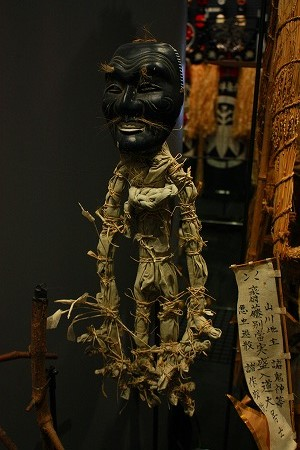
恐い！
翁の面に草で出来た胴体。
胴体には無数の紐が結び付けられており、何だかちまきみたいになっちゃってるぞ。
キャプションを見ると「若宮 奈良県 大宇陀」とだけ書いてある。
なんだ？これは若宮という神様なのか？それにしても手が長すぎないか？つか顔が怖いんですけど、つか身体も怖いんですけど…。
…と頭の中がクエスチョンマークで一杯になった。
帰ってから調べてみると、大宇陀市平尾にある平尾水分神社のオンダ祭りに登場する神様だという。
ちなみに宇陀周辺には水分神社が沢山あるのでお間違えなきよう。
水分神社は「みくまり」と読み、水を分かつ神様と言われている。
転じて雨乞いの神、さらに「みくまり」が訛化して「みこもり」となり子育ての神にもなったとか。
因みに奇祭というかチン祭として有名な明日香の飛鳥坐神社のおんだ祭りはここのオンダ祭りとは全然内容が違うのでお含みおきを。
というわけで行ってきました。平尾水分神社のオンダ祭り！
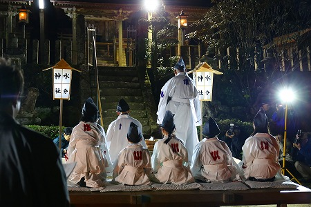
祭りは真冬の夜に執り行われる。
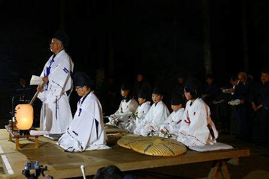
日が暮れて周囲が凛とした闇に包まれる頃、厳かに祭りは始まる。
因みにこの祭、奈良県の無形文化財に指定されているが、見物客は少ない。
地元のテレビ局と私を含めた数名のカメラオヤジ。あとは地元の人達だけという実に静かな雰囲気だった。
頂戴した甘酒をすすりながら祭りを見る。
神前に作られた舞台の上に座るのは祭りを司る大当とそのサブの小当の2人。
その後ろに座っているのはショトメと呼ばれる5人の子供たち。
この7人が祭りのメインとなる人たちだ。
最初に大当の男性が鍬を打つ仕草をして、祝詞のような歌のような不思議な節回しの口上を述べる。
やや甲高いトーンの口上はどうやら江戸時代から伝わるものだそうだ。
すると周辺にいた男性陣がそのコールに合わせてレスポンスするのだ。
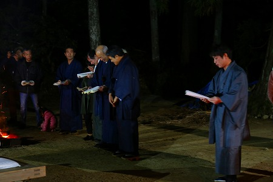
意味は判らないが何だかのんびりとした口調と時折レスポンス陣がアドリブを入れているようで、笑いも交じりながら和やかに式次第は進む。
「良い事はこの当初へ、悪い事は西の海へ…」というフレーズが妙に印象的だった。
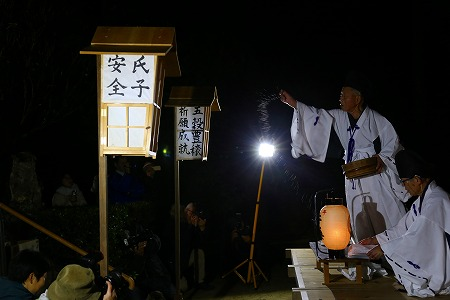
神様にコメを投げる大当。
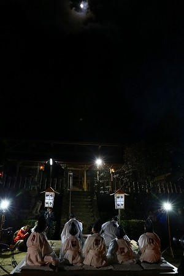
見上げれば本殿の真上には雲の隙間から見事な月が顔を出していた。
チョット神秘的だったよ。
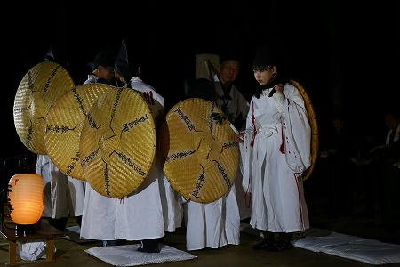
ショトメと呼ばれる子供たちが舞台の上を回り始めた。
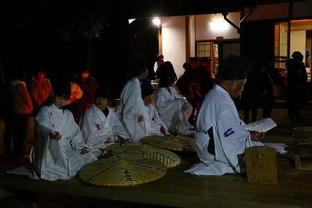
再び座り、祝詞のような詞章を唱える。
年少の子供たちはチョット飽きちゃってる感じだった。
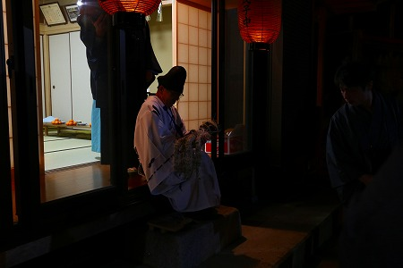
祭りが終盤になると社務所からいよいよ若宮さんが登場する。
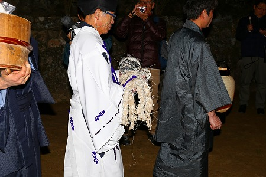
よ〜のなかがよければ〜 わかみやさんがまいられた〜
という歌と共に若宮さんが入場。
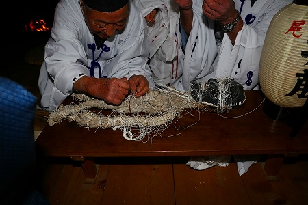
そして舞台の小机の上に若宮さんは置かれる。
それにしても何という姿だろう。
笑ってるんだか歪んでるんだか良く判らない表情の翁の面、手が異様に長い身体、そして全身に巻かれた無数の紙紐。
ただでさえ異形の神像なのに、体中縛られているので余計呪術チックな印象が強い。
まるで黒魔術に使われている呪術人形のようではないか。
大当の説明では参拝者は自分の身体の悪い部分に縛られている紙紐を持ち帰り保管しておけば、その部分が良くなるのだという。
見ればそれまで遠巻きに見ていたギャラリーの皆さんも徐々に若宮さんに近づいていくではないか。
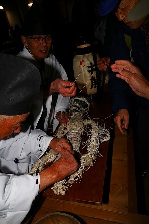
先ほどまでけ静々と踊っていたショトメの子供たちが、今度は一転して若宮さんの元に走り寄って来る。
我先にと若宮さんの足に付いている紙紐を貰おうというのだ。
足が速くなりたいとかサッカーが上手くなりたいとかで足の紙紐が圧倒的に人気なのだ。
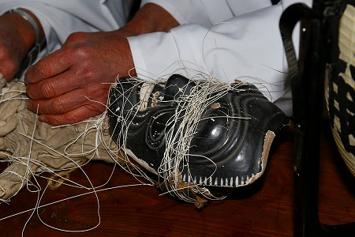
大当、小当の方が結び付けられた紙紐を解き、子供たちに渡している。
子供たちの後には一般の見物客も縁起物の紙紐を頂くことが出来る。
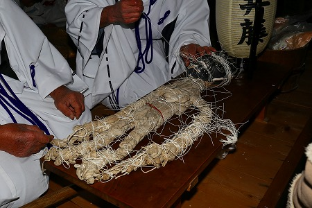
折角なので私も頂いた。
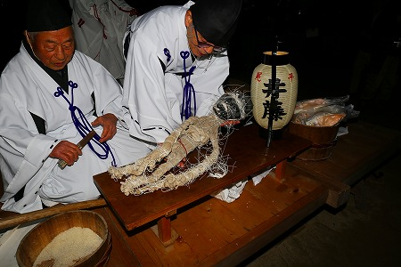
どこにします？
（食い気味に）肝臓で！
ホウホウ、ではこの辺で。
…と言って腰の辺りに巻いてあった紙紐を頂く。
やったぜ！これで肝機能復活だぜ！
因みに私の前の人（地元テレビの関係者だった）は目が悪いらしく、目の辺りに縛ってあった紐を貰っていた。
私の後の人は頭！と言っていたが、頭には紐が結べないのでやっぱり目の辺りに縛ってあった紐を貰っていた。
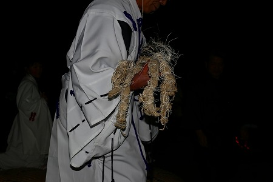
一通り参列者に紐が行き渡ると若宮さんは抱えられて帰っていく。
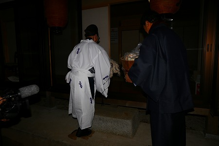
さらば若宮さん。
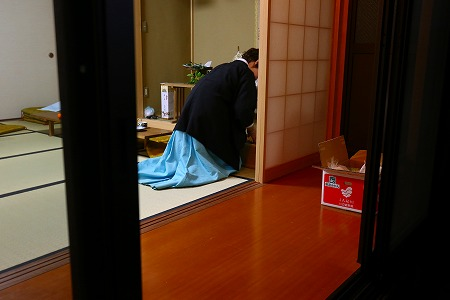
年に一度の大役を終えた若宮さん、無事箱の中に納まった。
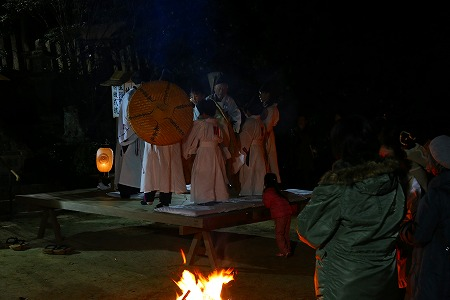
若宮さんの退場で祭りもそろそろお開きである。
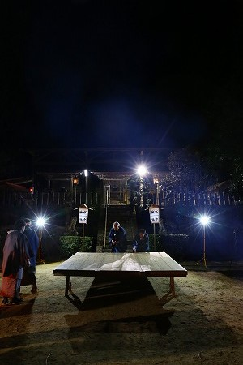
考えてみたら人形というものはそもそも人間の依り代である。
だから自分の身体の悪いところを撫でたり味噌や飯を付けたりする習俗はよく見かけるが、逆に人形（ここでは若宮さん）の一部を貰ってくるという習俗は珍しいのではないか。
実は先日行った拙写真展でも若宮さんの写真を展示したところ、何人かの専門家の方々がその事を指摘されていた。
貰ってくるのは紐だが、それは明らかに神様の身体の一部を貰い受ける、という行為のメタファーであることは間違いないだろう。
とすると、そこには何らかの深い意味があるはずなのだが、皆さんそんなことはお構いなしに、やれ腰が痛いだ、髪が薄いだ、とご自分の悩みに夢中なのである。
この日のために氏子さんたちが毎年紐を縛っている姿を想像すると頭が下がる思いだ。
というわけで紐は今でも大事にとってありますよ。肝臓？まあまあです…。
2019.01.
珍寺大道場 HOME